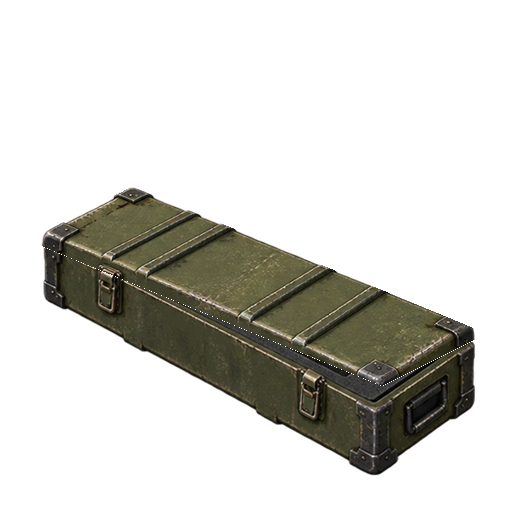
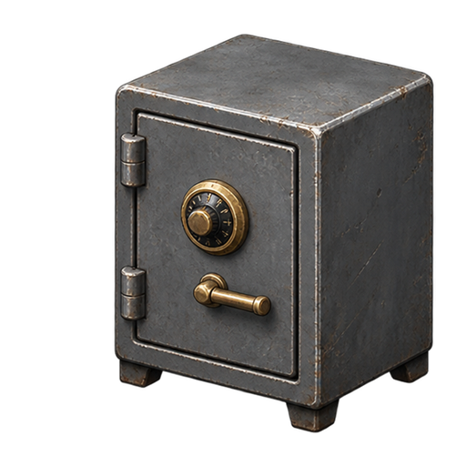

军用武器箱

显示画布 320 × 320 · 4 帧 / 8 FPS
点击逐个播放。各组固定 512×512 透明帧，统一缩放并按右侧底部对齐。

显示画布 320 × 320 · 4 帧 / 8 FPS

显示画布 176 × 176 · 4 帧 / 8 FPS

显示画布 208 × 208 · 4 帧 / 8 FPS

显示画布 208 × 208 · 4 帧 / 8 FPS

显示画布 224 × 224 · 4 帧 / 8 FPS

显示画布 240 × 240 · 4 帧 / 8 FPS